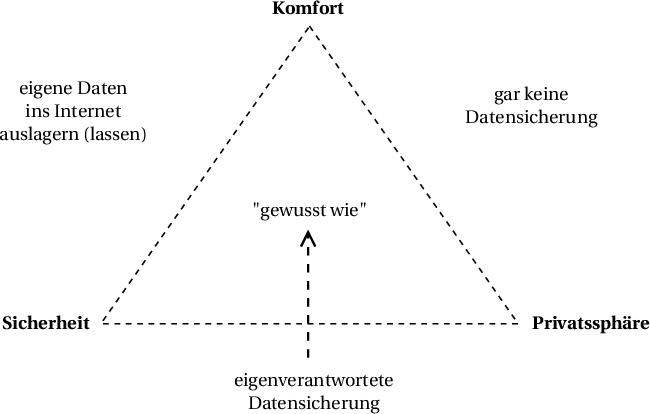

Einstieg
{kind=link}
{kind=link}
Schutz der Daten vor…
-
Rechner-Brand
Welche Daten?
Welche Daten sind schützenswert?
-
Fotos, Bilder
-
Musik, Hörbücher
-
Filme
-
Dokumente aller Art (Text, Tabelle)
-
Einstellungen bestimmter Programme (wie E-Mail, Browser, Musikspieler)
Jeweils festzustellen: wo liegen die Daten auf der Festplatte (wenn überhaupt)?
Medium
-
Grundsätzlich: Die Daten sollten sich auf mindestens 2 und örtlich voneinander getrennten Medien befinden.
Abwägung
Eine Möglichkeit von Zielkonflikten:

Ordner-Sync mit externer Festplatte
-
Einfaches Verfahren, wenn automatisiert (hier: mit FreeFileSync)
-
Daten liegen als einfache Kopie vor
-
(im Gegensatz zu speziellen Backup-Archiven)
-
Backup-Medium kann an beliebigen Computer angeschlossen werden, um auf Daten zuzugreifen
-
-
Restore-Test sehr einfach (abgesehen von Programmeinstellungen)
-
Festplatte liegt an getrenntem Ort und wird nur zum Backup angeschlossen
-
Schutz vor Online-Angriffen
-
-
Stand zu genau einem Zeitpunkt
Initial: Dateien auf Dateien auf Computer externen Festplatte ---------- ------------------- bilder/strand.jpg [leer] bilder/wasserball.jpg bilder/cocktail.jpg dokumente/testament1.docx dokumente/liebeserkl.ods Alle Dateien werden kopiert: Dateien auf Dateien auf Computer externen Festplatte ---------- ------------------- bilder/strand.jpg bilder/strand.jpg bilder/wasserball.jpg bilder/wasserball.jpg bilder/cocktail.jpg bilder/cocktail.jpg dokumente/testament1.docx dokumente/testament1.docx dokumente/liebeserkl.ods dokumente/liebeserkl.ods Die Dokumente ändern sich: Dateien auf Dateien auf Computer externen Festplatte ---------- ------------------- bilder/strand.jpg bilder/strand.jpg [gelöscht] bilder/wasserball.jpg bilder/cocktail.jpg bilder/cocktail.jpg dokumente/testament1.docx[M] dokumente/testament1.docx dokumente/liebeserkl.ods dokumente/liebeserkl.ods dokumente/liebeserkl2.ods Die Unterschiede werden ermittelt und angewendet: - bilder/wasserball.jpg wurde gelöscht - dokumente/testament1.docx wurde geändert - dokumente/liebeserkl2.ods ist neu Dateien auf Dateien auf Computer externen Festplatte ---------- ------------------- bilder/strand.jpg bilder/strand.jpg bilder/cocktail.jpg bilder/cocktail.jpg dokumente/testament1.docx dokumente/testament1.docx dokumente/liebeserkl.ods dokumente/liebeserkl.ods dokumente/liebeserkl2.ods dokumente/liebeserkl2.ods